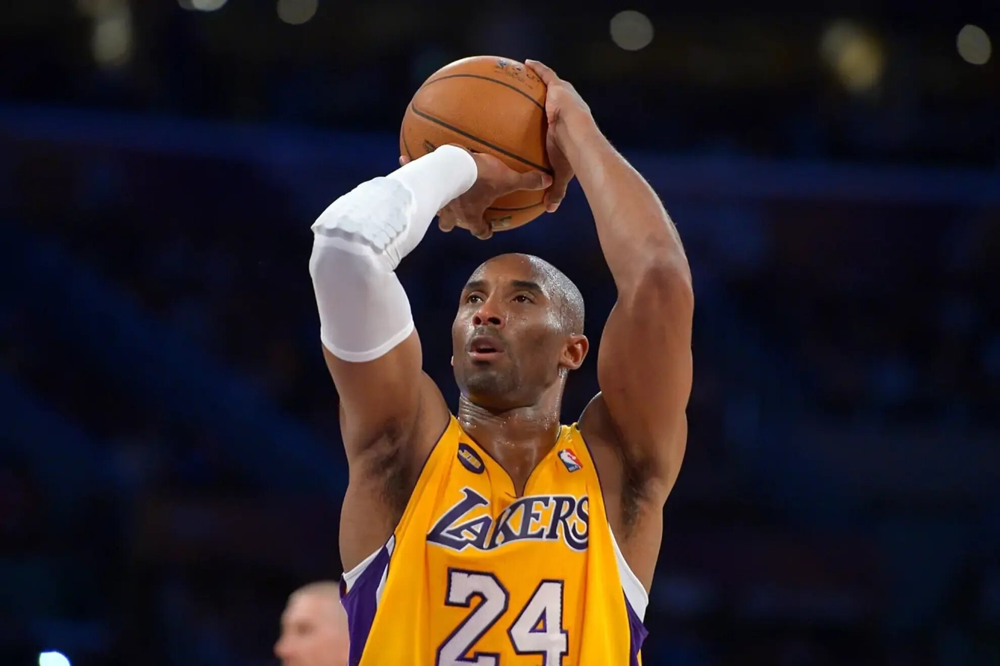
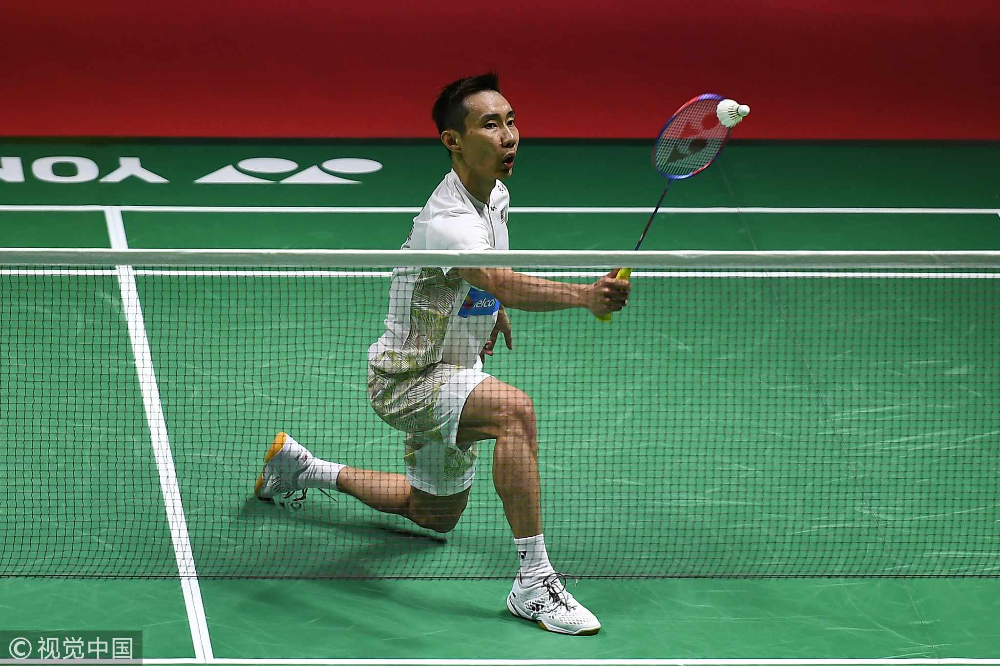

Favorite Sports

Basketball
I adore playing basketball, and it is one of my favorite ways to stay active. It not only keeps me healthy and motivated, but it also promotes discipline and collaboration.
I routinely play basketball with my buddies, and it's a terrific way to unwind and have fun after a long day of studying or coding.
Basketball keeps me engaged and motivated, whether I'm shooting hoops, practicing dribbling, or competing in friendly contests.
It's about more than simply physical conditioning; it's about refining my mind and enjoying the company of friends.

Badminton
Badminton is another favorite sport of mine. Playing badminton clears my mind, gives me fresh energy, and allows me to focus on my projects with renewed vigor.
The fast-paced nature of the game keeps me engaged and sharpens my reflexes.
When I play badminton with my pals, I can feel my stress evaporate with each rally.
It a wonderful way to bond with friends while getting in a great workout.
Whether I smashing the shuttlecock over the net or working on my footwork, every match leaves me feeling invigorated and refreshed, ready to tackle my responsibilities with a clear mind.

Swimming
I definitely adore swimming. It's also my favorite hobby, not just because it's fantastic for exercise, but also because it makes me feel free and relaxed.
Swimming, whether gliding over the water or practicing various strokes, is always relaxing and exhilarating.
It's a great way to stay active while clearing my mind; the sensation of being in the water is unrivaled, and I enjoy every minute of it, whether I'm swimming or competing.